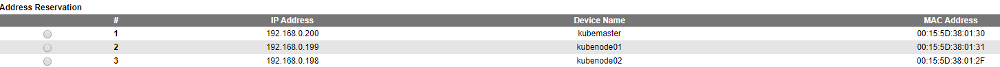
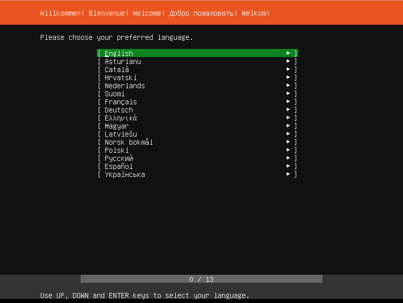

Kubernetes
Create Kubernetes nodes
Prepare networking
I added 3 MAC addresses to my router's DHCP settings, so that each machine would get the same IP from the DHCP server

Next I added 3 new virtual machines, based on the Ubuntu server 18.04 ISO. Each machine was configured the same way, except for the MAC address of course.
Creating VM machines
Create 3 virtual machine with the following specs:
Add the Ubuntu ISO to the CD drive, which I downloaded from the site, then uploaded to the datastore.
Boot up each machine and just follow the installer of ubuntu server, accepting the defaults. I added the OpenSSH server and imported my github key so I didn't needed to setup ssh access any further.



Then SSH into each machine in a separate terminal.
ssh 192.168.0.200
ssh 192.168.0.199
ssh 192.168.0.198
Next verify each machines ip address
sudo ip addr
Install software
Next install docker
sudo apt-get update
sudo apt-get install -y docker.io
Next installer the kubernetes cli tools
sudo apt-get update && sudo apt-get install -y apt-transport-https curl
curl -s https://packages.cloud.google.com/apt/doc/apt-key.gpg | sudo apt-key add -
sudo cat <<EOF >/etc/apt/sources.list.d/kubernetes.list
deb http://apt.kubernetes.io/ kubernetes-xenial main
EOF
sudo apt-get update
sudo apt-get install -y kubelet kubeadm kubectl
You need to install these on all the VMs.
Tweak Ubuntu Settings
Disabling swap
sudo swapoff -a
Comment out the swap file in /etc/fstab
sudo nano /etc/fstab

Then delete the swap file
sudo rm -f /swap.img
sudo systemctl enable docker.service
Add DNS entries
sudo nano /etc/hosts
and add the following
<vm-ip> <vm-name> <vm-name>.olympus.home
<vm-ip> rancher rancher.olympus.home
Setup kubernetes
Setup the master node
On the master node initialize the cluster.
sudo kubeadm init
Run the proposed commands on the master
mkdir -p $HOME/.kube
sudo cp -i /etc/kubernetes/admin.conf $HOME/.kube/config
sudo chown $(id -u):$(id -g) $HOME/.kube/config
kubeadm does a lot of the heavy lifting required to setup a Kubernetes Cluster like installing a CA, generating certificates, installing and configuring etcd, getting addons like CoreDNS, kube-proxy. But one thing that is does not do is install a networking addon. For Kubernetes to work you need to have a pod network add-on. There are a lot of CNI providers and you can choose any of them. I chose Weave Net as it does not require any additional configuration. You install it on the Master node by running
kubectl apply -f "https://cloud.weave.works/k8s/net?k8s-version=$(kubectl version | base64 | tr -d '\n')"
Add the worker nodes
Use the following command on each of the worker nodes
kubeadm join 192.168.0.200:6443 --token 5auxv4.26************90 --discovery-token-ca-cert-hash sha256:01e5ef2c************************************************6a4ff89564
If you ever need to reconstruct this command, check out the blog post of Scott Lowe.
At this point your Kubernetes Cluster is up and running. You can use the kubectl command from the Master node to query the cluster information.
kubectl cluster-info
kubectl get nodes
kubectl describe nodes
Once all are in the ready state we have a working Kubernetes cluster with 3 nodes (one master node and 2 worker nodes).
Post install
Remote Kubectl
we have kubectl once we ssh into the master node, but we might want to get the same access from an external machine. To do so, we copy the ~/.kube/config to our local machine and add it to our local KUBECONFIG env variable.
scp your-username@192.168.0.200:/home/your-username/.kube/config C:/Users/your-username/.kube/config-esxi-kubernetes
More on this in kubectl configuration
Docker login for private repositories
To have the cluster be able to pull docker images from a private repository, refer to the documentation.
A docker login however will not store the credentials in the config.json as it is insecure, however you can easily create that credential as that's just the base64 encoded string of the username and password for the registry. Note that for github's package registry your password is to be a personal token, not the credentials you use to login.
[Convert]::ToBase64String([System.Text.Encoding]::ASCII.GetBytes('$DOCKERHUB_USER:$DOCKERHUB_PASSWORD'))
or
echo -n '$DOCKERHUB_USER:$DOCKERHUB_PASSWD' | base64
and use the output in config.json
{
"auths": {
"https://index.docker.io/v1/": {
"auth": "$BASE64_STRING"
}
}
}
WARNING Base64 is NOT encryption and should never be considered safe!
MetalLb
Since we're runnig on a BareMetal cluster (not on Azure, GCE, AWS, ...), the loadbalancers don't get an IP assigned. Kubernetes doesn't offer that out of the box. A solution for this is MetalLB
kubectl apply -f https://raw.githubusercontent.com/google/metallb/v0.8.3/manifests/metallb.yaml
Then provide a config
kubectl apply -f ./src/kubernetes/metallb.yaml
Now each time a resource of type load balancer is started, MetalLB will assign it an external IP from the pool it was given.
Pull private images
Basically follow the kubernetes documentation.
Make sure your docker's config.json contains the secret.
{
"auths": {
"https://index.docker.io/v1/": {
"auth": "c3R...zE2"
}
}
}
NOTE: In case of github package registry, you use a personal token as the password to give access to your registries.
Add a secret with those docker credentials to your cluster and give it a name like regcred.
kubectl create secret generic regcred --from-file=.dockerconfigjson=C:/Users/<username>/.docker/config.json --type=kubernetes.io/dockerconfigjson
Then use that secret by name as part of your deployment
spec:
containers:
image: private-image:1.0
imagePullPolicy: IfNotPresent
name: private-image
imagePullSecrets:
- name: regcred
restartPolicy: Always